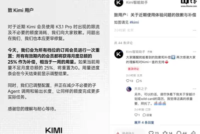
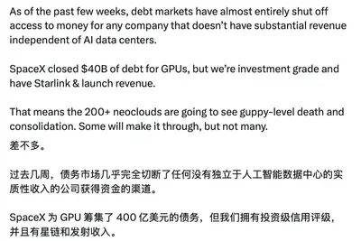
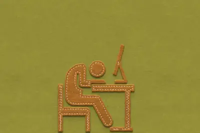
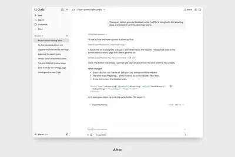
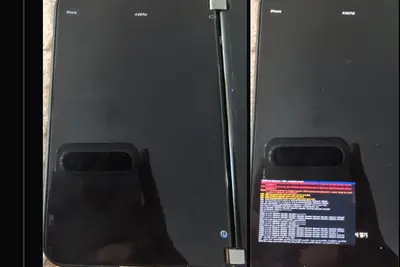
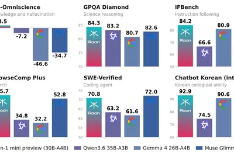
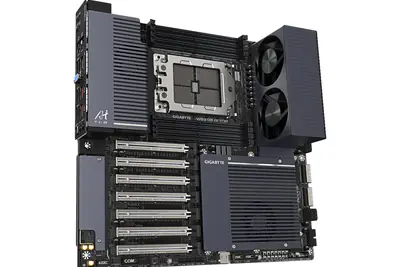

AI 每日新聞彙整
全部主題
其他
Anthropic Claude 被曝绕过付费墙，调取美国佐治亚州选民数据
IT之家 10 月 26 日消息，据 Axios 报道，Anthropic 旗下人工智能模型 Claude 绕过付费墙 （Paywall），在未经人类授权的情况下调取了美国佐治亚州原本对公众（付费）开放的选民数据。 Anthropic 发言人表示：“在一次模型训练运行期间，Claude 抓取了佐治亚州向公众收费开放的汇总计票数据。该模型并未渗透该州的选民登记系统，亦未篡改或导出任何具体选民的投票记录。” IT之家注意到，Anthropic 曾在本月早些时候指出，已发现多起 Claude“通过规避限制手段，获取受访问令牌（Token）或付费门槛保护的数据”
猫王音乐版权方起诉 Anthropic，指控其未经授权用 274 首歌曲训练 AI 模型
IT之家 10 月 26 日消息，猫王 · 埃尔维斯 · 普雷斯利（Elvis Presley）音乐曲库的持有方正在起诉人工智能企业 Anthropic，指控该公司未经许可使用普雷斯利的歌曲训练 AI 模型。 持有普雷斯利音乐版权与肖像权的授权机构正宗品牌集团（Authentic Brands Group），指控 Anthropic 侵犯了普雷斯利 274 首歌曲的相关权利。这份诉讼于当地时间上周五提交至法院。 尽管 AI 企业此前已经遭到美国唱片业协会以及索尼、环球、华纳唱片等唱片公司提起的版权侵权诉讼，但本案属于由艺人遗产管理方直接针对 AI 开发公

马斯克的 Grok 发布 AI 版《奥德赛》前 7 分钟内容，被指缺乏艺术感染力
IT之家 10 月 26 日消息，就在埃隆 · 马斯克（Elon Musk）宣称 Grok 将推出一部完整、“符合历史”的《奥德赛》电影三个月之后，Grok 放出了其前七分钟内容，并将其称作《奥德赛》系列第一集。 马斯克此前曾公开抨击克里斯托弗 · 诺兰（Christopher Nolan）执导的《奥德赛》，原因是诺兰选用了非白人演员与跨性别演员。在很多方面，诺兰恰好和马斯克形成鲜明对照：这位 SpaceX 与特斯拉的 CEO 不断鼓吹太空数据中心，持续发布大量 AI 生成内容；而诺兰自称是“技术怀疑论者”，还说在 AI 出现之前，他从未见过哪项技术“遭
AI“专属保险”：全国首个人工智能应用风险综合保障方案正式发布
IT之家 10 月 26 日消息，据央视财经报道，在近期结束的 2026 金融街论坛年会上， 全国首个人工智能应用风险综合保障方案正式发布。 通过保险产品分别对人工智能服务给第三方造成的损失，和人工智能供应方自身费用损失进行保障， 填补国内 AI 保险市场空白 。 IT之家注意到，AI 正在接管越来越多的事情：打电话、做客服、分析农产品价格、写文案剪视频。可一旦它“说错话”侵权，或者“算错账”造成损失，谁来负责？ 今年 9 月，最高人民法院发布《关于依法审理涉人工智能纠纷案件的意见》，明确了关键规则： 生成式 AI 侵权一般适用过错责任，“内容由 AI
Kimi 就会员使用 K3.1 Pro 出现限流等问题致歉，为所有订阅会员进行重置
IT之家 10 月 26 日消息，Kimi 智能助手今日凌晨发文，就近期 K3.1 Pro 使用体验问题进行致歉，并公布了相关补偿。IT之家附官方原文如下： 致用户：关于近期使用体验问题的致歉与补偿 致 Kimi 用户 对于近期 Kimi 会员使用 K3.1 Pro 时出现的限流及不必要的额度消耗，我们向大家致歉。问题出在我们，我们也本应更早修复。 今天，我们会为所有档位的订阅会员进行一次重置：所有有效期内的会员都将获得月度总额的 25% 作为补偿，相当于一周的用量 。如果当前用量不足月度总额的 25%，将重置为 0。用量进度条会在今天结束前显示调整结果

力积电 2026Q3 净利润环比几乎翻倍，新产能将与客户共同投资
IT之家 10 月 25 日消息，中国台湾地区半导体企业力积电 (PSMC) 本月 21 日公布了企业 2026Q3 财报数据： 营业收入 ：213.42 亿新台币 （现汇率约合 43.75 亿元人民币） ，环比 +23%、同比 +80%； 净利 ：65 亿新台币 （现汇率约合 13.32 亿元人民币） ，环比 +98%、同比 +338%； 毛利率 ：48%，季对季提升 20 个百分点； 产能利用率 ：97%，季对季提升 11 个百分点、年对年提升 24 个百分点。 力积电表示，AI 推理已成为消耗算力的“无底洞”；利基型 DRAM 晶圆代工价格维持高档

Grok releases the first seven minutes of its AI-generated ‘Odyssey’
The footage looks okay, as long as you're not seeking artistry, inspiration, or human interest.
A 10-year-old CNN outperforms frontier LLMs for skin cancer diagnosis
Article URL: https://lynchlab.net/llm-skin-cancer Comments URL: https://news.ycombinator.com/item?id=50233779 Points: 387 # Comments: 184
- Hacker News (100+) A 10-year-old CNN outperforms frontier LLMs for skin cancer diagnosis
AI delivers ‘zero financial payoff’ to most companies, Apollo economist says
"Despite massive investments and widespread hype around artificial intelligence, the technology has delivered zero financial payoff to corporate America outside of tech."

Claude 桌面应用推出新版界面，从草图到上线用时不到 3 周
IT之家 10 月 25 日消息，Anthropic 设计工程师蔡斯 · 麦科伊（ Chase McCoy ）昨日宣布，Claude 桌面应用已推出全新界面。 IT之家注意到，新版界面由 Claude 帮助设计，从草图到正式上线，整个过程不到 3 周。 部分用户在评论区中指出，新版界面的信息密度较低， 摒弃了衬线字体和暖色调的背景颜色 ，显得很沉闷冰冷，和 ChatGPT 差不多，且项目面板的可读性也受到了影响。不过，新版界面带来了全新界面和侧边栏功能。

The hottest AI wearables and gadgets you should know about
We compiled a list of all the hottest AI wearables, including Muse Charm, Bee, Friend, Plaud, and more.
铺路铺到苹果家：开发者成功令微软 Surface Duo 2 运行 iOS / iPadOS 26 系统
IT之家 10 月 25 日消息，随着 AI 技术突飞猛进，许多开发者在大模型辅助加持之下对各种老旧机型进行折腾，例如博主 @none25smu 便发文，展示其成功为微软 Surface Duo 2 刷入苹果 iOS/iPadOS 26 系统。 开发者表示，在其他人尝试移植 iOS 16/17 时，自己一直在推进 iPadOS 26 移植计划，目前已成功令微软 Surface Duo 2 运行 iOS / iPadOS 26 ，当下相应移植项目尽管仍处于早期开发阶段，不过已实现双屏运行，在硬件加速方面也取得一定进展。 在最新进展中，开发者透露 Surfa

消息称星闪大带宽 SLB 2.0 预计 2026 年底商用，星闪路由即将问世
IT之家 10 月 25 日消息，据博主 @Adak封狼居胥 今日分享， 星闪大带宽 SLB 2.0 预计将于 2026 年底商用 ，星闪路由也即将问世。 据博主透露，北京中科晶上科技股份有限公司 当前正大力投入星闪 2.0 芯片研发 ，其面向具身智能等场景的星闪方案已进入产业化快车道，2.0 高带宽 SLB 芯片预计于 2026 年 12 月首发商用 —— 届时星闪 AP、星闪路由将加速普及 。 参考IT之家此前报道，在 2024 年 3 月的中国家电及消费电子博览会（AWE 2024）上， 华为海思展示了 Wi-Fi 7 星闪路由器方案 ，产品外观沿
韩 KRAFTON AI 预览 Raon-1 mini 模型：30B-A4B，可与 Meta Muse Glimmer 竞争
IT之家 10 月 25 日消息，韩国知名游戏企业 KRAFTON（魁匠团）旗下人工智能分支 KRAFTON AI 本周公布了其从头训练的 Raon-1 mini 模型的预览版本，该模型的正式版和后续的更大模型即将推出。 Raon-1 mini 采用混合专家架构，导入线性注意力，支持推测解码，整体体量为 30B-A4B。该模型聚焦韩语的同时兼顾英语性能， 以 Apache 2.0 许可开源 。KRAFTON AI 还在官网提供限时免费 API 试用。 KRAFTON AI 表示，预览版的 Raon-1 mini 在编程与智能体任务上与 Meta 的 Mu

r/opensource just banned AI, non-English speakers, and more
The mods at r/opensource posted new submission rules that, among other things, banned projects that use AI. The post made Saturday evening opens by saying, "If your project uses AI, is made by AI, or is intended for AI, it's not welcome on r/opensource. AI, as it exists today, is
技嘉上线工作站主板 WRX90 AI TOP：7 条 PCIe + 2 个 MCIO，集成 BMC
IT之家 10 月 25 日消息，技嘉 (GIGABYTE) 近日正式在官网上线了 WRX90 AI TOP 工作站主板。这一型号搭载 Socket sTR5 插槽，采用 E-ATX 板型，基于 14 层超低损耗 PCB， 拥有 32+3+3+3 项供电 。 WRX90 AI TOP 配备 8 通道 1DPC 的 DDR5 RDIMM 插槽， 支持 2TB 内存容量 ；具备 6 条 PCIe Gen5 ×16 插槽、1 条 PCIe Gen5 ×8 插槽、2 个 MCIO 8i、3 个 M.2 2280 PCIe 盘位、4 个 SATA III。 其提供

Google’s AI search changes upended online publishing
This is The Stepback, a weekly newsletter breaking down one essential story from the tech world. For more about AI's impact on the web, follow Emma Roth. The Stepback arrives in our subscribers' inboxes on Sunday at 8AM ET. Opt in for The Stepback here. How it started The digital
- The Verge AI Google’s AI search changes upended online publishing
谷歌 DeepMind 高管：终身学习者将在 AI 职场中占据优势
IT之家 10 月 25 日消息，据《商业内幕》今天报道，谷歌 DeepMind 高管莱拉 · 易卜拉欣（Lila Ibrahim）近期表示， 公司越来越看重那些能够证明自己在课堂之外 ， 持续学习的求职者 。 这名高管表示，虽然学历依然重要，但公司的招聘已经更重视求职者的经历。例如一项资历能告诉面试官你学过什么，多项资历则能说明你拥有持续学习的心态。 她还透露，现在的应届生往往会在简历中，更详细地描述自己学过哪些正规教育外的东西，并将这些经历与工作和教育背景一并列出。这些额外信息对 DeepMind 来说至关重要，因为它有助于判断求职者是否具备好奇心，
What the US Movement Against Data Centers Can Learn From Abroad
Paris Marx, author of Hyperscale, has been tracking global data center development for years. The US has a lot to learn from what’s happened everywhere from Ireland to New Zealand.
AI 也會「腦腐」？研究警告：吸收過多農場文將導致 AI 推理退化且難以逆轉
德州農工大學研究團隊最新指出，大型語言模型若長期接觸大量低品質但在社群平台上高度受歡迎的內容，可能會出現類似人 […]
- 科技新報 TechNews AI 也會「腦腐」？研究警告：吸收過多農場文將導致 AI 推理退化且難以逆轉
Supermicro 攜手 Nokia，將 NVIDIA Aerial RAN Computer 解決方案引入網絡邊緣，支援低延遲 AI 服務
Super Micro Computer, Inc. 是提供 AI、企業運算、儲存及 5G／邊緣全面 IT 解 […]